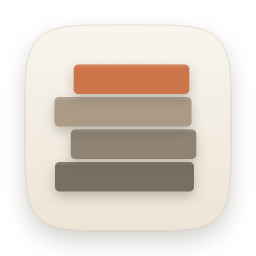

Hibiori
日々が、織りあがる。
Hibiori（ひびおり）は、メニューバーに常駐して作業時間を記録する Mac のアプリです。タスクを選んで計測を始めるだけで、記録・グラフ・日報が一日ぶん織りあがっていきます。
お問い合わせ
不具合の報告やご要望は、GitHub の Issues で受け付けています。
報告いただくときは、次の内容があると調べやすくなります。
- Hibiori と macOS のバージョン
- 何をしたときに、どうなったか
Issues は誰でも見られる場所です。記録の中身など、人に見せたくない情報は書かないでください。
よくある質問
Dock にアイコンが出ません
Hibiori はメニューバーだけに出るアプリです。画面右上のメニューバーにあるアイコンから操作します。
記録はどこに保存されますか
お使いの Mac の中だけに保存されます。インターネットへは送りません。設定の「データ」から CSV / JSON に書き出せるほか、1 日 1 回、自動でバックアップを取っています。
計測を止め忘れたら
長時間の計測は通知でお知らせします。スリープや画面ロックを挟んだときは、戻ったときに終了時刻の候補を示して確認します。あとから記録の編集で時刻を直すこともできます。
チップを送ると何か変わりますか
機能は変わりません。開発を続けるための支えとして、設定の「チップ」から送れます。